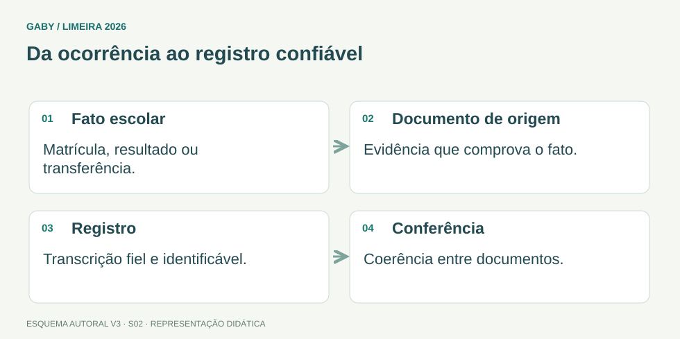

Objetivos do módulo
- Entender o conceito e a finalidade da escrituração escolar.
- Reconhecer princípios de exatidão, autenticidade, legibilidade, segurança e rastreabilidade.
- Relacionar registros a matrícula, frequência, avaliação e conclusão.
- Saber como agir diante de erros, divergências e retificações.
Da ocorrência ao registro confiável

Descrição em texto do esquema
- Fato escolar: Matrícula, resultado ou transferência.
- Documento de origem: Evidência que comprova o fato.
- Registro: Transcrição fiel e identificável.
- Conferência: Coerência entre documentos.
Oficina visual · aplique o esquema
A data de nascimento está diferente na ficha e no histórico. Qual deve ser a primeira providência?
Atividade autoral complementar da V3. Registre sua resposta; a resolução está no arquivo de gabarito e revisão.
Mapa do conteúdo
1. O que é escrituração escolar
Escrituração escolar é o conjunto de registros formais que documenta fatos relativos à vida escolar dos alunos e ao funcionamento da unidade. Ela produz evidência administrativa e jurídica do que ocorreu: matrícula, frequência, resultados, transferências, progressão, conclusão e demais atos escolares.
Não se trata apenas de “preencher papel”. A escrituração deve permitir que outra pessoa, posteriormente, compreenda o histórico do aluno e verifique a regularidade dos atos praticados.
2. Princípios práticos dos registros
Esses princípios valem para registros físicos e eletrônicos. Digitalizar não elimina responsabilidade: muda o suporte, mas não a necessidade de confiabilidade.
| Princípio | Aplicação |
|---|---|
| Exatidão | O registro deve corresponder ao fato/documento de origem. |
| Legibilidade | Informação precisa ser compreensível. |
| Integridade | Não omitir elementos relevantes nem alterar conteúdo de forma indevida. |
| Rastreabilidade | É possível identificar origem, sequência e eventual correção. |
| Segurança | Proteger contra perda, acesso indevido e alteração não autorizada. |
| Atualidade | Registros devem ser lançados e atualizados no momento adequado. |
3. Fontes e conferência
Antes de registrar, o secretário deve conferir documentos e dados: nomes, datas, identificação, escola de origem, série/ano, resultados, carga horária e demais informações exigidas. Divergências devem ser tratadas pelos procedimentos oficiais, não corrigidas informalmente por conveniência.
A regra de ouro é: registro deve ser sustentado por fonte verificável. Quando houver retificação, deve existir forma de demonstrar o que foi corrigido e por quê.
4. Erros, rasuras e retificações
Em documentação oficial, apagar vestígios ou “maquiar” erro pode comprometer autenticidade. O procedimento adequado depende do sistema, do suporte e das normas locais, mas deve preservar histórico e permitir auditoria.
Em sistemas digitais, perfis de acesso, logs e trilhas de alteração ajudam a demonstrar autoria e data da modificação. Em registros físicos, seguem-se os procedimentos formais previstos nas normas da rede.
5. Relação entre documentos
Ficha individual, diário/registro de classe, sistema de notas, histórico e ata de resultados finais precisam ser coerentes. Quando o mesmo fato aparece em documentos diferentes, divergências são sinal de alerta.
Uma boa secretaria realiza conferência cruzada antes de expedir documentos, especialmente histórico escolar, declarações e transferência.
Exemplos resolvidos passo a passo
Exemplo 1
Situação: O nome do aluno aparece abreviado em um documento e completo em outro.
Exemplo 2
Situação: Nota final no sistema é 7,0, mas a ata registra 6,0.
Exemplo 3
Situação: Servidor percebe erro após lançamento em sistema.
Pegadinhas e erros frequentes
- Achar que registro eletrônico pode ser alterado informalmente.
- Expedir documento apesar de divergências.
- Usar memória do servidor em lugar de fonte documental.
- Confundir rapidez com falta de conferência.
- Compartilhar senha de sistema escolar.
Resumo de prova
- Escrituração documenta formalmente a vida escolar.
- Todo registro deve ser exato, íntegro, legível e rastreável.
- Dados devem ser sustentados por fonte verificável.
- Retificação precisa seguir procedimento formal.
- Documentos relacionados devem ser conferidos entre si.
- Segurança vale para arquivos físicos e digitais.
Exercícios do módulo
Resolva sem consultar o arquivo de gabarito. As questões são autorais e construídas para treinar os conceitos do edital.
- substituir todas as normas pedagógicas
- eliminar a necessidade de arquivo
- documentar formalmente fatos da vida escolar e do funcionamento da unidade
- produzir apenas estatísticas sem valor documental
Fontes: Brasil — Lei 9.394/1996, LDB, texto compilado · Conarq — Criação e desenvolvimento de arquivos públicos municipais.
- permitir acesso irrestrito
- poder identificar origem, sequência e alterações de um registro
- apagar erros sem deixar vestígio
- guardar documentos sem classificação
Fontes: Brasil — Lei 9.394/1996, LDB, texto compilado · Conarq — Criação e desenvolvimento de arquivos públicos municipais.
- verificar as fontes e regularizar formalmente antes de expedir
- escolher o maior valor
- alterar ambos sem registro
- ignorar se a diferença for pequena
Fontes: Brasil — Lei 9.394/1996, LDB, texto compilado · Conarq — Criação e desenvolvimento de arquivos públicos municipais.
- é recomendado para agilizar
- é obrigatório
- não produz qualquer risco
- é inadequado e compromete autoria e segurança
Fontes: Brasil — Lei 9.394/1996, LDB, texto compilado · Conarq — Criação e desenvolvimento de arquivos públicos municipais.
- foi feito rapidamente
- não pode jamais ser corrigido
- corresponde ao fato ou documento de origem
- está escrito com letra bonita
Fontes: Brasil — Lei 9.394/1996, LDB, texto compilado · Conarq — Criação e desenvolvimento de arquivos públicos municipais.
- dispensar justificativa e norma
- preservar possibilidade de verificar a correção
- eliminar todo vestígio do valor anterior em qualquer caso
- ser feita por qualquer pessoa
Fontes: Brasil — Lei 9.394/1996, LDB, texto compilado · Conarq — Criação e desenvolvimento de arquivos públicos municipais.
- realizar conferência cruzada dos registros
- usar somente a memória do atendente
- ignorar a ata final
- não verificar identificação
Fontes: Brasil — Lei 9.394/1996, LDB, texto compilado · Conarq — Criação e desenvolvimento de arquivos públicos municipais.
- torna a conferência desnecessária
- permite acesso público a tudo
- dispensa backup e controle de acesso
- não elimina requisitos de integridade e segurança
Fontes: Brasil — Lei 9.394/1996, LDB, texto compilado · Conarq — Criação e desenvolvimento de arquivos públicos municipais.
- uso de qualquer abreviação
- eliminação de campos
- informação compreensível e inequívoca
- uso obrigatório de letra cursiva
Fontes: Brasil — Lei 9.394/1996, LDB, texto compilado · Conarq — Criação e desenvolvimento de arquivos públicos municipais.
- a divergência não importa
- há sinal de inconsistência a apurar
- ambos são automaticamente válidos
- deve-se escolher aleatoriamente
Fontes: Brasil — Lei 9.394/1996, LDB, texto compilado · Conarq — Criação e desenvolvimento de arquivos públicos municipais.
Quando terminar, abra Secretário de Escola 02 - Escrituração Escolar - Gabarito e Revisão.
Checklist de domínio
- ☐ Entender o conceito e a finalidade da escrituração escolar.
- ☐ Reconhecer princípios de exatidão, autenticidade, legibilidade, segurança e rastreabilidade.
- ☐ Relacionar registros a matrícula, frequência, avaliação e conclusão.
- ☐ Saber como agir diante de erros, divergências e retificações.
Meta do módulo: 80% ou mais nas questões, sem depender de consulta.
Referências e conteúdos auxiliares
- Brasil — Lei 9.394/1996, LDB, texto compiladoOrganização da educação, incumbências escolares, avaliação, frequência e documentação.
- Conarq — Criação e desenvolvimento de arquivos públicos municipaisConsulte especialmente gestão de documentos, protocolo, classificação, avaliação e destinação.
Referências externas de apoio consultadas para a V3 em 27/09/2026. A origem das questões é o material autoral do projeto; estes links não indicam que uma instituição publicou ou validou os exercícios. As páginas externas precisam de internet. Em informática, confira a versão do programa; em legislação, observe o recorte e as regras de atualização do edital.